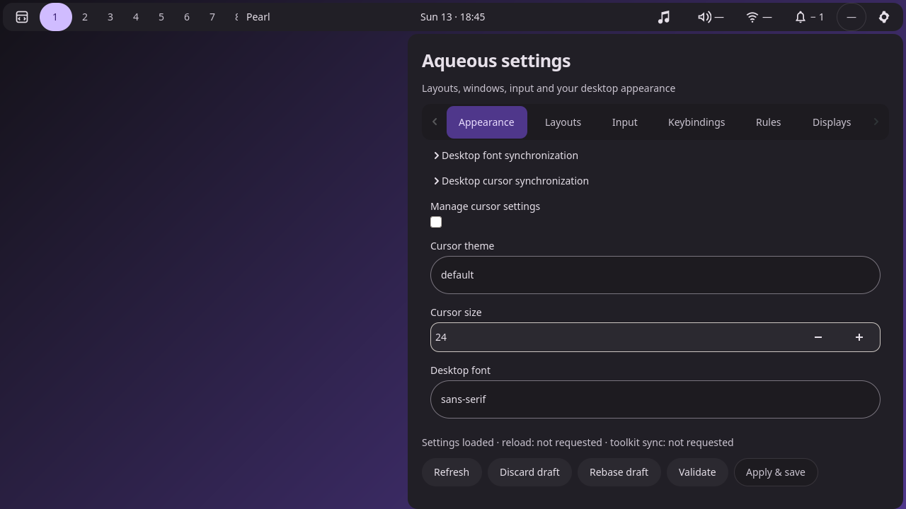
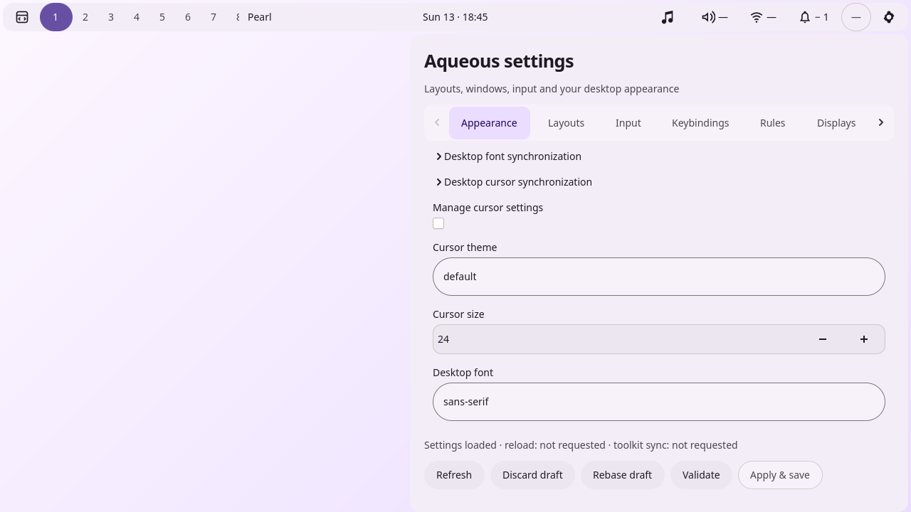
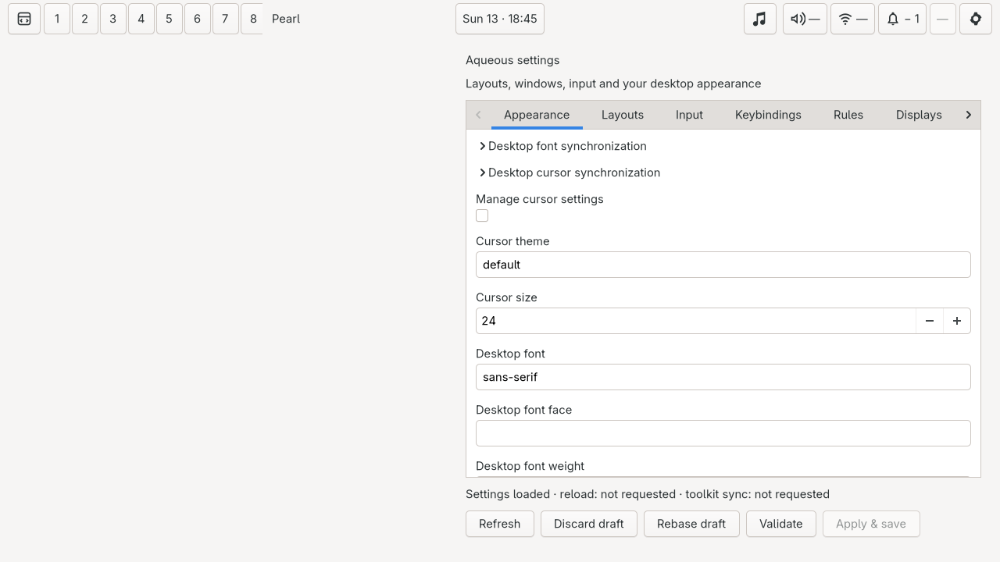
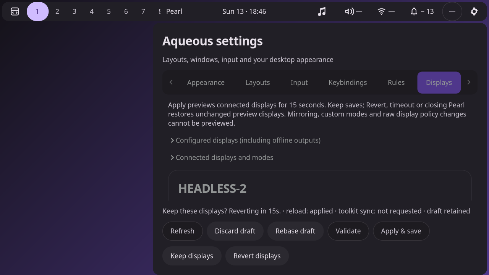
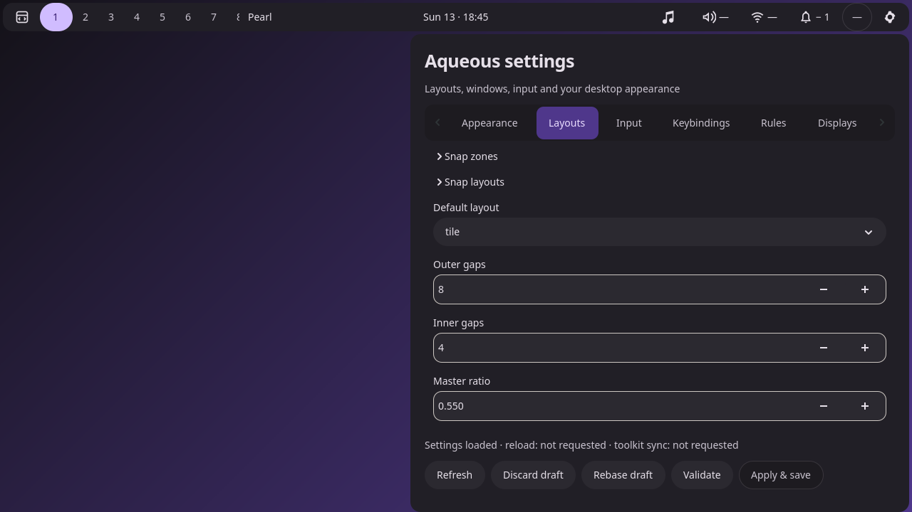
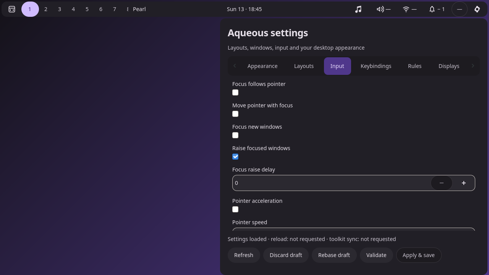
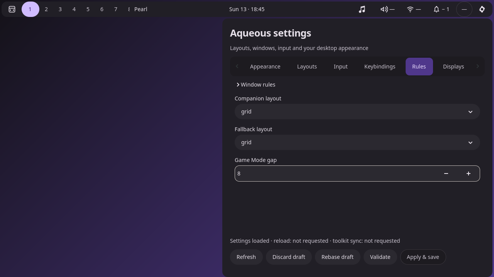
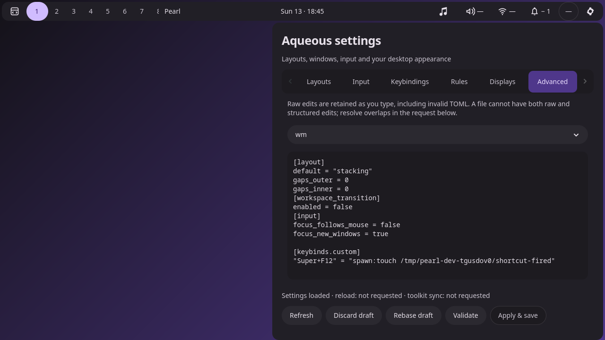

Unedited private-session captures alongside the frozen DMS references. Native GTK mode follows GTK styling. The display guardian keeps the original live configuration until confirmation. Verification and limits.







